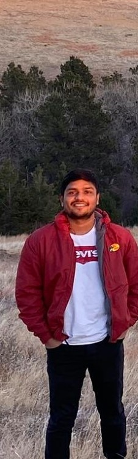

home
research
publication
books
movies
vlog
about
Hi, I am
Saurav Das
soil scientist
What I do
Soil and Plant Microbiology
Soil Health and Biogeochemistry
Data Driven Agriculture
My CV
Who I am
I am a postdoctoral Research Assocaite

Recent Publication
Ghimire, D., Das, S., Mueller, N. D., Creech, C. F., Santra, D., Baenziger, P. S., ... & Maharjan, B. (2021). Effects of cultivars and nitrogen management on wheat grain yield and protein. Agronomy Journal, 113(5), 4348-4368.
M., Das, S., Bora, S. S., Boro, R. C., & Barooah, M. (2021). Comparative assessment of multi-trait plant growth-promoting endophytes associated with cultivated and wild Oryza germplasm of Assam, India. Archives of Microbiology, 203(5), 2007-2028.
Maize yields from manure and mineral fertilizers in the 100‐year‐old Knorr‐Holden Plot
Soil Health Gap: A concept to establish a benchmark for soil health management
A longitudinal study on morpho-genetic diversity of pathogenic Rhizoctonia solani from sugar beet and dry beans of western Nebraska